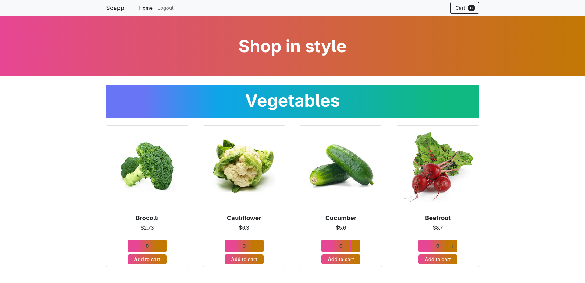

Projet Cloud Computing LINFO2145
Application cloud native développée dans le cadre du cours LINFO2145 - Cloud Computing. Le projet implémente une architecture microservices moderne avec déploiement automatisé sur AWS, monitoring complet et haute disponibilité.
Technologies Cloud
Microsoft Azure
Docker Swarm
Svelte
Node.js
RESTful APIs
CouchDB
HTTP/HTTPS
GitHub
Architecture
- Architecture microservices avec API Gateway
- Base de données NoSQL distribuée
- Load balancer avec auto-scaling
- Cache distribué avec Redis
- Queue de messages asynchrone
- Storage cloud avec Azure Blob
Fonctionnalités Implémentées
- API RESTful avec authentication JWT
- Interface web React responsive
- Monitoring en temps réel
- Pipeline CI/CD automatisé
- Tests automatisés complets
- Déploiement containerisé
Défis Techniques
Principaux défis : implémentation d'une architecture microservices scalable, optimisation des performances et des coûts cloud avec Map/Reduce, gestion des états distribués, et mise en place d'un système de monitoring efficace.
Résultats & Performances
- Disponibilité : 99.9% uptime
- Latence : <100ms pour 95% des requêtes
- Scalabilité : Support de 10,000+ utilisateurs concurrent
- Coût : Optimisation de 40% par rapport à l'architecture initiale